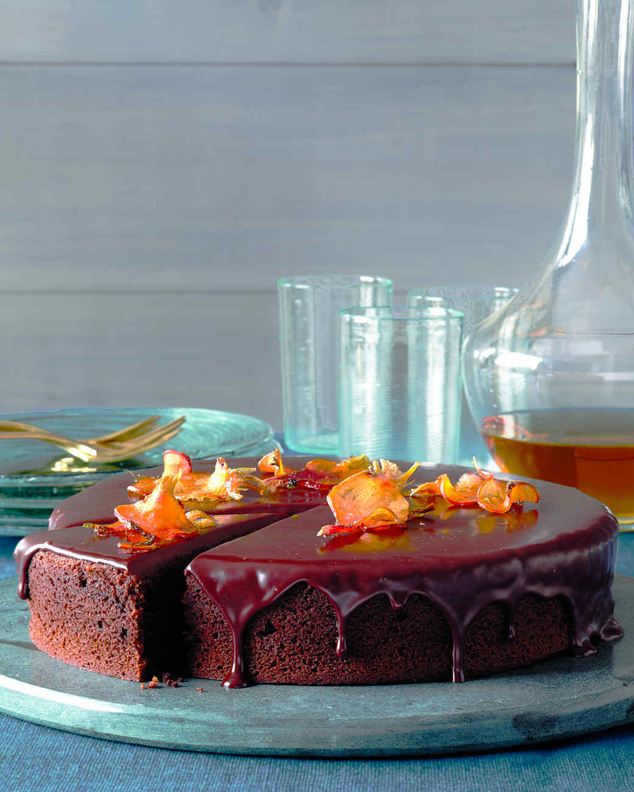

Chocolate Beet Cake Recipe 1
Source: Martha Stewert Living, November 2011
601 West 26th Street, 10th Floor.
New York, NY 10001.
Getting Started:
"You won't taste the pureed beets, but they make this cake extra moist and play up its deep chocolate flavor."
I haven't tried this recipe yet, but I'm really looking forward to trying! I'll attempt it next week when I have time. E-mail me how it goes! 2
- Prep Time: 25 mins
- Total Time: 3 hrs
- Servings: 8
Additional Recipes:
There are two required recommended additional recipes needed to complete this cake, although you may try others. See the end of the ingredients list below. Storage instructions provided in footnotes.3
Ingredients:
Cooking Terms: 4
This cake requires several hours of preparation, not including what's required for the glaze or garnish (if utilized). You will need common kitchen utensils like a whisk, but may also require more specialized equipment like a mandoline and food processor to create the beet puree.
- Garnish
- Garnishes are edible items added to food dishes that provide added flavor and appealing appearances for the items being served.
- Mandoline
- A mandoline is a hand-operated appliance used for cutting and slicing fruits and vegetables.
- Puree
- To puree is to blend, grind or mash food until it is a thick, smooth, lump-free consistency.
- Whisk
- The process of using a whisk to blend ingredients together or to incorporate air into ingredients to increase their volume.
Directions:
- Cover beets with 2 inches water in a pot. Bring to a boil. Reduce heat, and simmer until very tender when pierced with the tip of a sharp paring knife, about 30 minutes. Drain. Puree beets in a food processor until smooth.
- Preheat oven to 350 degrees. Whisk together flour, sugar, cocoa powder, baking soda, and 3/4 teaspoon salt in a large bowl. Whisk in eggs, water, oil, vanilla, and 1 1/4 cups beet puree (reserve remaining puree for another use).
- Coat a 9-inch round cake pan (3 inches deep) with cooking spray. Line bottom with parchment, and coat with spray. Pour batter into pan. Bake until a toothpick inserted into the center comes out clean, about 45 minutes. Let cool in pan on a wire rack for 20 minutes. Turn out cake from pan, and discard parchment. Let cool completely, right side up.
- Trim top of cake using a serrated knife to create a level surface. Transfer cake, cut side down, to a platter. Pour chocolate glaze over the top, and let set, about 30 minutes. Garnish with beet chips.